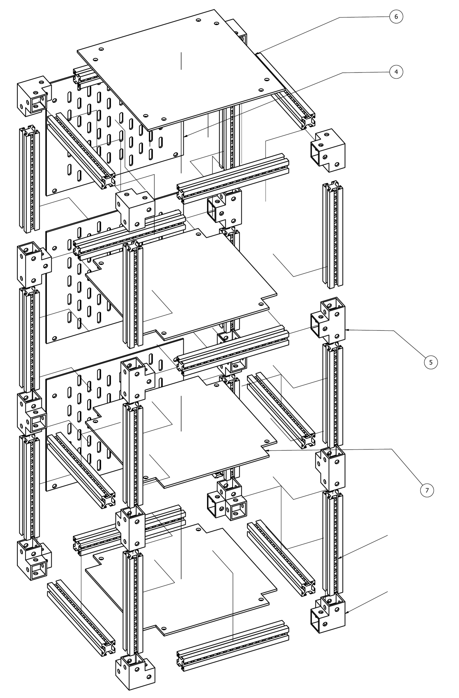

Personal project · Autodesk Inventor · PLA, FDM
Modular 3D-printed nightstand
A three-floor nightstand built entirely from printed parts: slotted frame rails, corner and T connectors, printed screws and shims, and Skadis pegboard side panels. It stands 10.44 × 10.44 × 29 in. I modeled every part and made a full 9-sheet drawing set.
All 9 drawing sheets (PDF)DFMEA · 16 failure modes · 5 modules
Risk level, Severity × Probability
Before controls
7 high9 med
Target after controls
10 med6 low
- Joint load path. Each screw threads into a shim in the far slot, so every joint's load ends on two 0.065 in lips in the rail. The test is a whole-joint pull-out, not a screw-only test.
- Floor sag. Plate-bending estimate of about 1.9 mm under a uniform 15 lb and 5.4 mm under a center point load. One center rail brings that to about 1 mm.
- Tip-over. A 10.44 in footprint under a 29 in height, with hanging loads on one side, is rated at the top severity in the analysis.
The after-control levels are targets until the load tests are run.